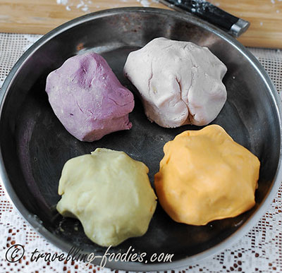

Taiwanese 芋圓 (yu yuan)
Recipe and images from TravellingFoodies.
Yu yuan is a popular Taiwanese dessert topping often eaten with shaved ice or warm sweet soups. The character 芋 (pronounced yu) refers to taro root, while 圓 (yuan) refers to their round shape.
Although originally made from taro, they can also be made will all sorts of sweet potato (orange, purple, or yellow) or other root vegetables to have different colors and subtle flavor differences.
Time: 1.5 hours | Servings: 3-4
Ingredients
- 150g taro or sweet potato
- 60-90g sweet potato flour
(amount will vary based on moisture content of the dough) - 2 tbsp light brown or demerara sugar
- 1 tbsp water (if needed)
- Cornstarch (to prevent sticking)
Steps
- Thinly slice taro or sweet potato and steam on high heat, 20-30 minutes.
- Add sugar to taro or sweet potato and mash while still hot.
- Add sweet potato flour and knead, adding more flour or water as necessary to make a smooth dough.
 - Divide dough into two.
- Rol out each dough half into a thin long tube, around 1-cm in diameter.
- Cut each tube into even 1-cm pieces and thinly coat each in cornstarch. Cool to room temperature.
- Storing: After sitting at room temperature for 30 minutes, yu yuan can be stored in the freezer for later use.
- Cooking:
- Bring a pot of water to a gentle boil.
- Drop yu yuan into boiling water until they float, stir.
- Add 2-3 tbsp room temperature water and allow to boil once more.
- Repeat step c two more times.
- Drain yu yuan and mix with 2-3 tbsp sugar, cool to room temperature.
Congratulations! You have made yu yuan! Enjoy in the summer with shaved ice or ice cream, or eat with a hot bowl of red bean soup in the winter!